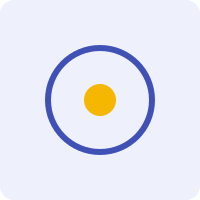

Major themes pursued in the group

Using clusters of galaxies as cosmological probes — number counts, scaling relations and mass calibration to constrain dark energy and structure growth.
Secondary anisotropies, the Sunyaev–Zel'dovich effect and CMB cross-correlations as windows on the late-time universe.
Probing the nature of the dark sector through large-scale structure, weak lensing and growth-of-structure measurements.
Statistics of the cosmic web, cross-survey correlations and the connection between baryons and the underlying matter field.
Bayesian inference, likelihood-free methods and forecasting for current and next-generation multi-wavelength surveys.
Intra-cluster medium physics, feedback and the thermodynamic history of the most massive bound objects.